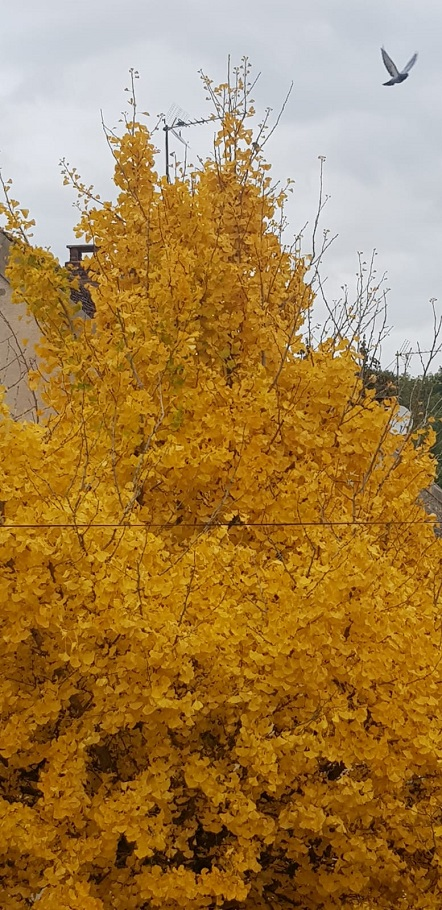
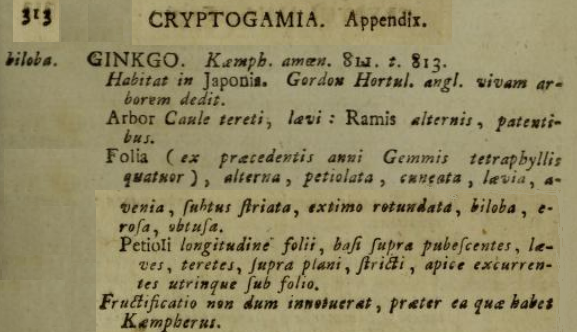
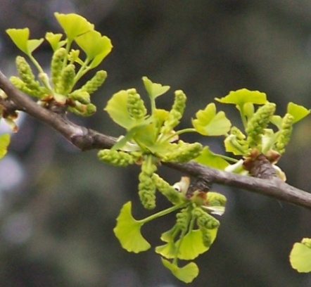
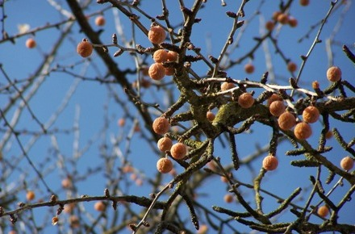
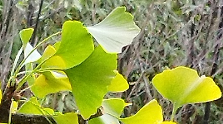
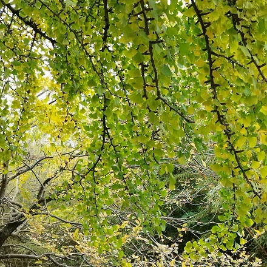
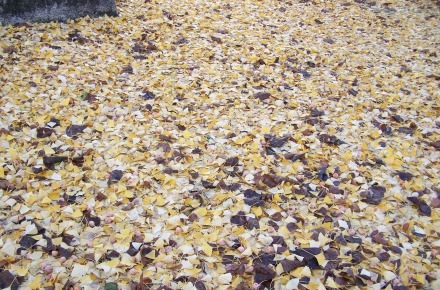
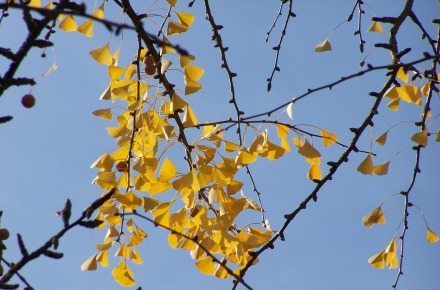
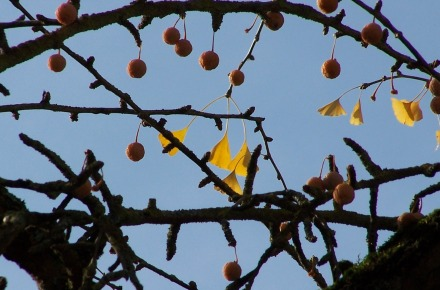
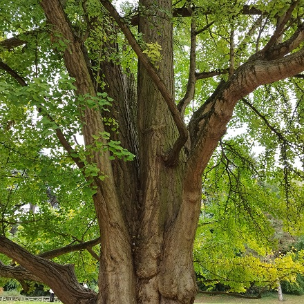

Famille des Ginkgoaceae, Engl., (1897)
Ordre des Ginkgoales
Sous-classe des Ginkgoidae
Classe des Ginkgoopsida
Clades Acrogymnospermae / Spermatophyta / Euphyllophyta / Tracheophyta / Embryophyta

| GINKGO biloba L. Gynkio, noyer du Japon |
|
Un arbre panchronique/relicte que Linné avait classé en supplément à ses Cryptogamia dans son Mantissa plantarum  En France, c'est Antoine Gouan (1733-1821) qui en fit la première description. Sa longévité est de plus ou moins 500 ans. Pour retrouver sa verticalité, cet arbre développe un Ci-dessous, loin d'Auxerre, au mois d'avril, cônes polliniques (microstrobiles) qui se dessècheront et tomberont après avoir libéré leurs grains de pollen (monocolpés et ovales) sous la forme d'une très fine poussière que le vent dispersera désormais (alors que, pourtant, le plus ancien pollinisateur fossile décrit à ce jour est un thrips couvert du pollen d'un Ginkgo, daté du Mésozoique). Ces cônes polliniques appartiennent à un Ginkgo biloba mâle, une espèce d'arbre dioïque, dite panchronique par certains, relicte ou rélictuelle par d'autres.  Les Ginkgo biloba ont deux types de branches : Tandis qu'au mois de novembre, à Auxerre, comme du temps de Goethe, ce grand arbre, un Ginkgo biloba femelle, n'aura jamais de fleurs et donc jamais de fruits, seulement des ovules entourés d’un tégument que l'on nomme sarcotesta.  En Automne il nous offre ses milliers de feuilles bilobées  Paris, Parc Montsouris, 28 octobre 2025 De couleur vert jaunâtre avant de tomber  Paris, Parc Montsouris, 28 octobre 2025 D'un jaune somptueux lorsqu'elles jonchent le sol puisqu'elles sont caduques.  Auxerre, 12 novembre 2011   Ses ovules sont disposés par paires à l'aisselle des feuilles, mais l'un des deux avortant rapidement, on n'en voit généralement plus qu'un seul. Mieux vaut s'abstenir de toucher sans précaution, bien que tombés par terre, ses ovules mûrs (dits noix) car leur sarcotesta charnue est parfois allergisante. Leur odeur, si particulière et si tenace, est « vraiment désagréable, voire pestilentielle » comme l'écrit Alain Baraton, odeur de vomi ou de beurre rance à Paris et dans d'autres villes de France... Ce sarcotesta protège l'amande (son œuf en fait renfermant un curieux embryon, qui n'est pas une graine et qui n'a donc pas de dormance possible). Cette amande est consommée en Chine, bouillie ou grillée. Le Ginkgo biloba est déjà mentionné, il y a plus de 4000 ans, dans le premier traité de phytothérapie de la Chine Antique connu sous le nom de Shénnóng Běncao Jīng. Au Japon, où cet arbre, considéré comme sacré, est nommé 銀杏 (ichô), les vieux Ginkgo biloba font des "chichi" の乳 (mamelons) et donnent donc... du lait (イチョウの乳 "ichō no chichi").  Ginkgo biloba, Paris, Parc Montsouris, 28 octobre 2025 |